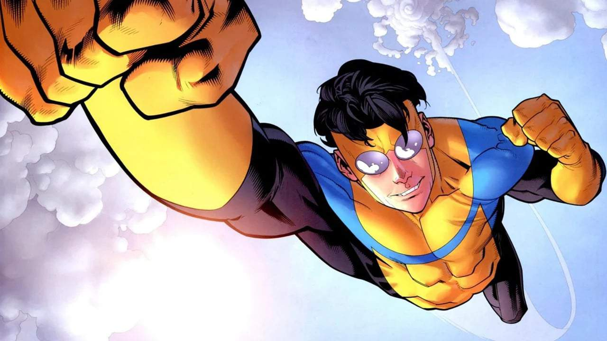
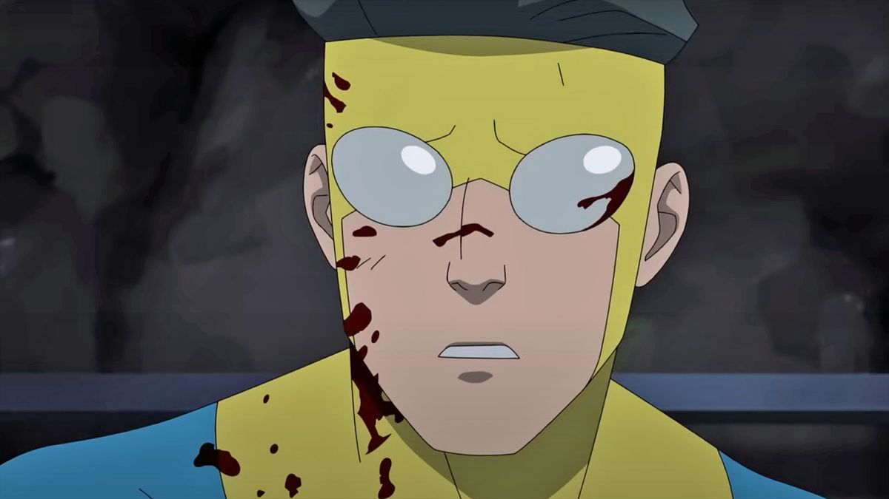
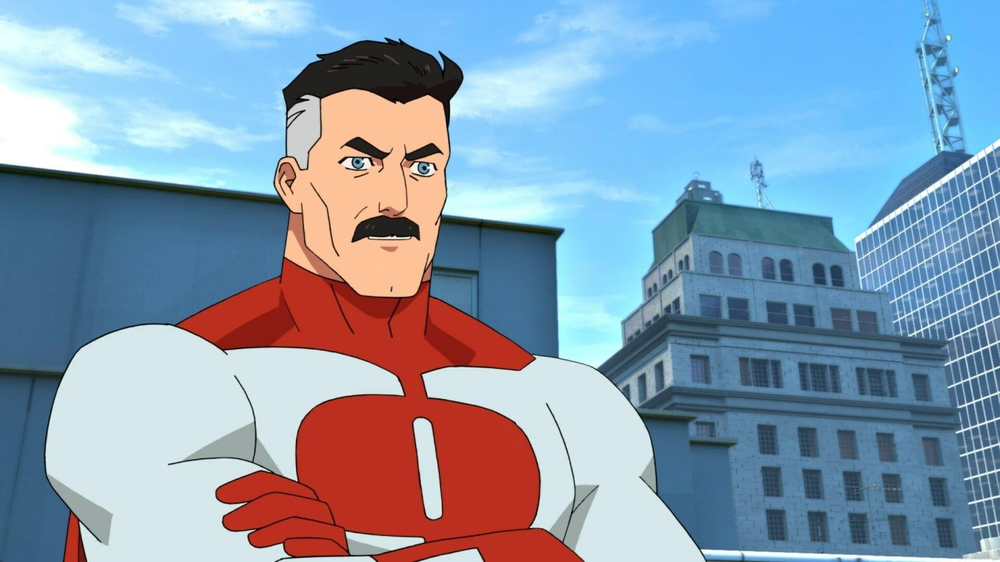
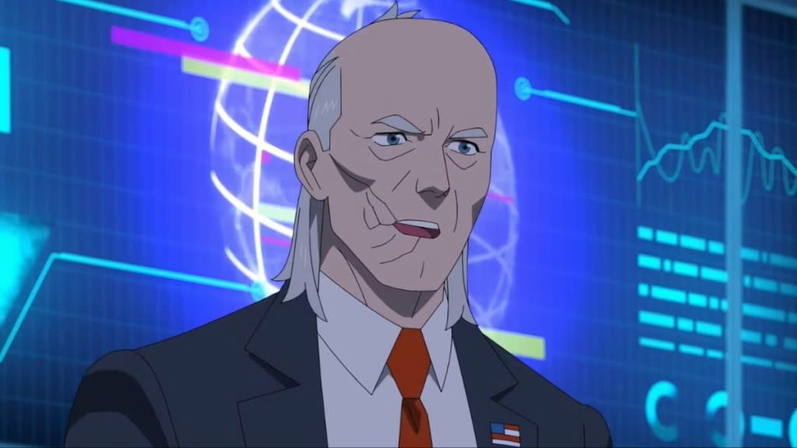
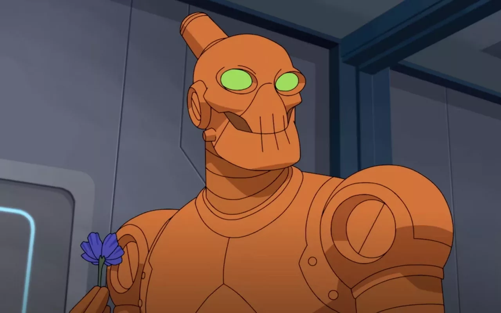
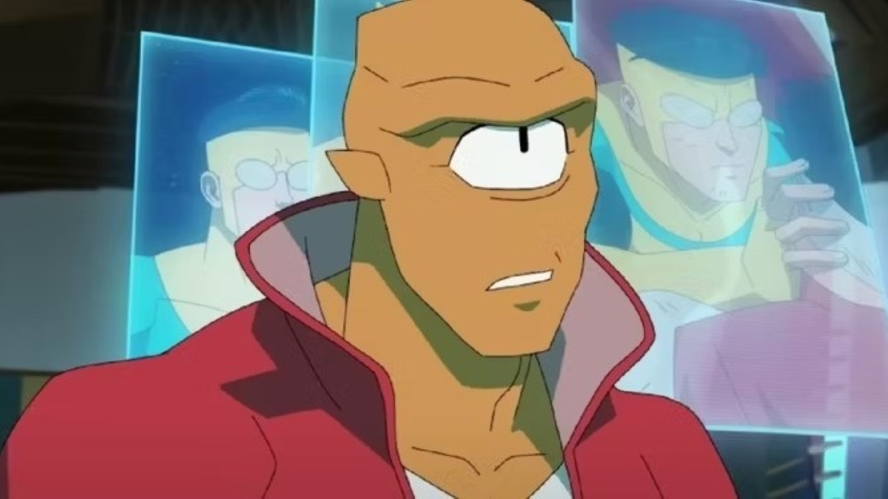

Sobre
"Invincible" é uma série animada de super-heróis baseada nos quadrinhos de mesmo nome criados por Robert Kirkman, também conhecido por "The Walking Dead". Lançada em 2021 pela Amazon Prime Video, a série mistura ação, drama e violência gráfica, com uma trama cheia de reviravoltas.
Invincible (bra/por: Invencível) é uma série animada de televisão norte americana de super-herói destinada ao público adulto, baseada no personagem Mark Grayson da revista em quadrinhos de mesmo nome criada por Robert Kirkman, que estreou no serviço de vídeo sob demanda Amazon Prime Video em março de 2021, com as vozes de Steven Yeun, Sandra Oh e JK Simmons, sobre a vida um adolescente normal, filho do super-herói mais poderoso do planeta, que próximo a juventude desenvolve poderes e passa a ser tutelado pelo pai.
A série é conhecida por sua abordagem madura e realista do gênero super-heróis, apresentando cenas de ação intensas e temas complexos. A animação é vibrante e os personagens são bem desenvolvidos, com histórias que exploram suas motivações e dilemas morais.
Invincible

Informações Gerais
Título Original: Invincible
Formato: Série de desenho animado
Criador: Robert Kirkman
Créditos: Robert Kirkman, Cory Walker, Ryan Ottley
País de Origem: Estados Unidos
Idioma Original: Inglês
Data de Criação: 8 de janeiro de 2003
Lançamento da Série: 26 de março de 2021
Produtor: Maude Lewis
Gênero: Ação, Drama, Animação, Ficção Científica
Classificação: +18 (violência extrema e temas maduros)
Plataforma: Amazon Prime Video
Empresas Produtoras: Skybound Entertainment, Amazon Studios, Point Grey Pictures
Sinopse
A história segue Mark Grayson, um adolescente comum que descobre que herdou os poderes de seu pai, Omni-Man. À medida que Mark tenta equilibrar sua vida normal com suas novas habilidades, ele enfrenta desafios que o forçam a se tornar o herói que nasceu para ser.
No entanto, a série rapidamente revela que nem tudo é o que parece, e Mark deve confrontar verdades sombrias sobre seu pai e o mundo dos super-heróis.
A trama se desenrola com Mark aprendendo a usar seus poderes, enfrentando vilões e lidando com as consequências de suas ações, enquanto descobre mais sobre o legado de seu pai e o que significa ser um herói.
Origem e Desenvolvimento
A série de quadrinhos "Invincible" foi lançada em 2003 e finalizada em 2018, totalizando 144 edições. Robert Kirkman, também criador de "The Walking Dead", idealizou a obra como uma releitura e desconstrução do gênero de super-heróis. O foco da narrativa sempre esteve na evolução pessoal, psicológica e moral do protagonista, bem como nas consequências reais e muitas vezes brutais da vida de um herói.
A adaptação animada foi anunciada em 2018, com o objetivo de ser fiel ao material original, mantendo tanto o tom adulto quanto as principais linhas narrativas.
Personagens Principais
Mark Grayson / Invincible
Quem é: Protagonista da série, adolescente que herda os poderes do pai.
Poderes: Superforça, voo, supervelocidade, fator de cura e resistência sobre-humana.
Personalidade: Ingênuo no começo, vai amadurecendo ao longo da história.
Evolução: Percebe que ser herói é mais brutal e complexo do que parece.
Nolan Grayson / Omni-Man
Quem é: Pai do Mark. Um dos seres mais poderosos da Terra, com segredos sombrios.
Raça: Viltrumita (raça alienígena conquistadora).
Poderes: Superforça, voo, invulnerabilidade, sentidos aguçados, fator de cura avançado.
Personalidade: Calculista e frio, mas com dilemas internos em relação ao filho.
Debbie Grayson

Quem é: Mãe do Mark e esposa do Nolan. Humana sem poderes.
Importância: Representa o lado emocional e humano da história.
Destaque: Forte emocionalmente, mesmo diante de grandes traições.
Atom Eve (Samantha Eve Wilkins)

Quem é: Colega e depois interesse amoroso do Mark.
Poderes: Manipulação de matéria e energia em nível atômico.
Personalidade: Independente, inteligente, com senso forte de justiça.
Cecil Stedman
Quem é: Diretor da Agência de Defesa Global (GDA).
Função: Controla os heróis e lida com ameaças globais.
Personalidade: Frio, calculista e estratégico. Faz o que for necessário pelo planeta.
Robot (Rudy Connors)
Quem é: Líder tático dos Guardiões do Globo (nova formação).
Segredo: O "robot" é controlado por um humano com corpo debilitado.
Evolução: Levanta questionamentos éticos sobre identidade e moralidade.
Guardians of the Globe (Guardiões do Globo)

Quem são: Equipe de heróis que lembra a Liga da Justiça.
Membros iniciais: War Woman, Darkwing, Red Rush, Green Ghost, Aquarius, Martian Man.
Nova formação: Rex Splode, Dupli-Kate, Monster Girl, Black Samson e Robot.
Allen the Alien
Quem é: Alienígena fortão e camarada. Trabalha pra Coalizão de Planetas.
Poderes: Superforça, regeneração, resistência elevada.
Papel na trama: Ajuda Mark a entender o universo e os Viltrumitas.
Outros personagens importantes
Rex Splode: Explode objetos com o toque.
Dupli-Kate: Cria múltiplos clones de si mesma.
Monster Girl: Se transforma num monstro superforte, mas rejuvenesce a cada transformação.
Damien Darkblood: Demônio detetive que investiga mistérios sobrenaturais.
Temas Abordados
A série discute moralidade, responsabilidade com o poder, conflitos familiares e o verdadeiro significado de ser um herói. Não foge de mostrar os impactos reais das batalhas, incluindo perdas humanas e consequências psicológicas.
Recepção e Impacto Cultural
Desde seu lançamento, "Invincible" recebeu ampla aclamação da crítica especializada e do público. Os elogios concentram-se especialmente no roteiro envolvente, na complexidade dos personagens e na capacidade da série de subverter as expectativas tradicionais do gênero super-heroico.
Além disso, a série tornou-se um fenômeno nas redes sociais, com várias cenas se tornando virais, principalmente o embate entre Mark e Omni-Man no episódio final da primeira temporada.
Com o sucesso, a Amazon confirmou novas temporadas, consolidando a série como uma das principais produções de animação adulta da plataforma.
Detalhes Técnicos
A animação é feita em estilo 2D, com cores vibrantes e um design de personagens que lembra os quadrinhos originais. A trilha sonora é impactante, complementando as cenas de ação e drama.
A série foi bem recebida pela crítica e pelo público, elogiada por sua narrativa envolvente e pela forma como subverte as expectativas do gênero super-heróis.
Considerações Finais
"Invincible" é uma obra que surpreende não apenas pelos seus elementos visuais, mas também pela profundidade narrativa. Uma verdadeira desconstrução do gênero super-heróis, que mistura momentos de humor com cenas brutalmente realistas.